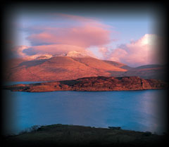

|
|
A buck’s head erased Proper
Je suis prest (I am ready)
A hand couped at the wrist in armour holding a cutlass in bend Proper
Two bucks rampant Proper
Quarterly, 1st & 4th, Azure, three fraises two and one Argent (Fraser); 2nd & 3rd, Argent, three antique crowns two and one Gules (Bisset)
|
|
The Frasers of Lovat descend from Sir Simon Fraser, brother of Sir
Alexander, chamberlain of Robert the Bruce. It is thought that Sir Simon
Fraser married the heiress to the Bisset lands around Beauly, and this
is how the family of Lovat came to be settled there. The first certain
record linking the lands of Lovat to the Frasers is in 1367 when Hugh
Fraser is styled ‘dominus de Loveth et portionarius de Ard’
(lord of Lovat and portioner of Ard). The Gaelic patronymic of the Lovat
Frasers is ‘Mac Shimidh’, meaning ‘son of Simon’,
and it was in use at least at the beginning of the fifteenth century.
Around 1422, the Frasers acquired lands at Stratherrick by Loch Ness,
together with part of Glenelg. Although the exact date of creation is
uncertain, some time between 1456 and 1464, Hugh Fraser was raised to
the peerage as Lord Lovat or Lord Fraser of Lovat. Around 1511, the
chiefs established their seat at Beaufort Castle, which is still inhabited
by them. The present castle is relatively modern, but occupies roughly
the same site as previous strongholds which were destroyed in the thirteenth
and eighteenth centuries.

The Lovat Frasers had their fair share of clan feuds and battles
but amongst the most memorable, and bloody, was with the Macdonalds
of Clanranald in 1544. The chiefship of Clanranald was in dispute
and Lord Lovat was the uncle of one of the warring claimants,
Ranald ‘Gallda’ (the stranger), whose cause he took
up. Lovat, with over four hundred of his best men, joined forces
with the Earl of Huntly, the Lieutenant of the North, to crush
the Macdonalds and make Ranald chief. The combined force marched
to Inverlochy in Lochaber from where they successfully established
Ranald’s control of Moidart by taking Castle Tioram. Huntly
then decided to split his force from the Frasers and returned
to his own territory. The expedition was cut short and Lovat led
his men up the Great Glen towards Glenmoriston. The decision to
divide their forces for the return journey may indicate that Lovat
and Huntly thought the Macdonalds were no longer a threat, but
this was to prove a fatal miscalculation for the Frasers. The
Macdonalds had been stalking the invaders but held back so long
as they were numerically inferior – a position which reversed
once Huntly’s men were gone. They moved swiftly to outflank
Lovat and fell upon the unsuspecting Frasers on a stretch of wild
marshland to the north of Loch Lochy. The battle became known
as Blar-na-leine – ‘the field of shirts’, when
the heat of day compelled the Highlanders to throw off their heavy
plaids or ‘feileadh mor’ to fight in their shirts. (Some
modern scholars dispute this translation, asserting that it really
refers to the marshy ground.) Lovat was outnumbered and could
have fought a rearguard action to try and cover his escape, but
instead he bravely led his men forward into a pitched battle.
Lovat, his son and heir, along with hundreds of his men, were
killed in the fierce fighting with victory falling to the Macdonalds.
Lovat and his son were buried in the priory at Beauly. The defeat
was a setback but the real power of the clan was largely undiminished.
|
|
|
|
|
|
The family multiplied rapidly and established many cadet branches,
including the Frasers of Reelig with their castle at Moniack,
Inverallochy, Fingask, and many others. The ninth Lord Lovat had
four daughters but no son, and his widow arranged a marriage for
Amelia, the eldest daughter and heiress, with the Master of Saltoun,
later twelfth Lord Saltoun. When his father was travelling to
Castle Dounie to discuss the marriage details with Lady Lovat,
Amelia’s uncle, Thomas Fraser of Beaufort, and his son, Simon,
later eleventh Lord Lovat, kidnapped him. He was held prisoner
and threatened with death if he did not agree to abandon the proposed
marriage, which he promptly did. Simon, the kidnapper, when eleventh
Lord Lovat, was famous as the ‘old fox’ of the Forty-five,
plotting with both government and Jacobite forces, depending upon
his assessment of where he thought his present advantage lay.
He mustered the Frasers to support Prince Charles Edward Stuart
in the autumn of 1745. At least one battalion (and some authorities
say two) of Frasers fought at Culloden Moor in April 1746. They
suffered heavy losses, and the whole Fraser country was ravaged
by the troops of the Duke of Cumberland. Charles Fraser, younger
of Inverallochy, although grievously wounded was summarily executed.
Mac Shimidh was captured at Loch Morar and taken to London, where
he was beheaded on Tower Hill on 9 April 1747. His title and estates
were declared forfeit. His son, Simon, was pardoned, and when
George II began raising Highland regiments, Lovat formed first
in 1757, the 78th Fraser Highlanders, who later fought with Wolfe
at Quebec and later the 71st Fraser Highlanders who served faithfully
in the American War of Independence. His brother, Archibald, later
raised the ‘Fraser Fencibles’ during the Napoleonic
War. He left no legitimate heirs, and in 1837 the peerage, which
had been attainted, was restored to a cousin, Thomas Fraser of
Strichen, a descendant of the fourth Lord Lovat. In 1899 Lord
Lovat raised the Lovat Scouts to fight in the Boer War. The Scouts
saw service in the First World War and in the Second, where Mac
Shimidh became a distinguished commando leader, being awarded
both the Distinguished Service Order and the Military Cross. He
died in 1995 shortly after tragically losing two of his sons in
accidents within a matter of months of each other. He was succeeded
by his 18-year-old grandson, Simon Fraser, but the great Lovat
estates, including Beaufort Castle, were sold to pay inheritance
tax.
|
|
|